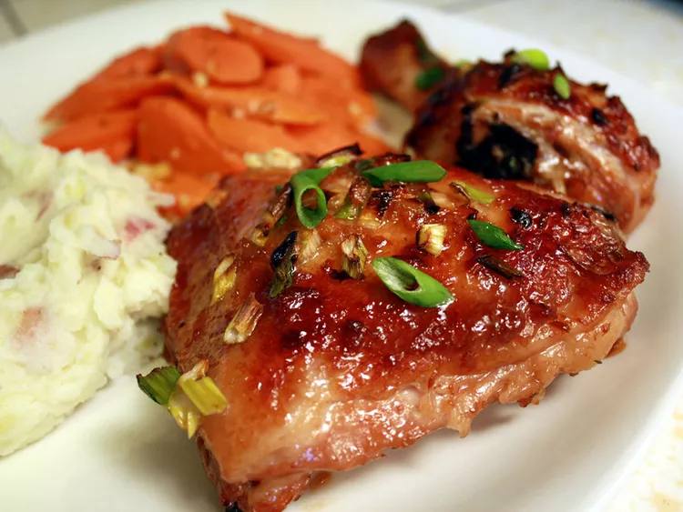

Baked Asian Style Chicken

Description
This Asian-style honey chicken uses a marinade of ginger, soy sauce, onion, and garlic to give this dish delicious flavor without a lot of fuss.
Ingredients
- 1 (3 pound) whole chicken, cut into pieces
- 3 tablespoons chopped onion
- 2 tablespoons soy sauce
- 2 tablespoons honey
- 1 tablespoon minced fresh ginger root
- 1 teaspoon minced garlic
- ¼ cup chopped green onions
Directions
- Arrange chicken pieces in a 9x13-inch baking dish. Combine onion, soy sauce, honey, ginger, and garlic in a small bowl; spoon mixture over chicken. Cover the dish and refrigerate to marinate for 1 hour, turning chicken once.
- Preheat the oven to 425 degrees F (220 degrees C).
- Bake chicken with marinade in the preheated oven for 30 minutes. Turn chicken over and top with green onions, then continue baking until chicken is no longer pink in the center and the juices run clear, 10 to 15 minutes. An instant-read thermometer inserted into the center should read at least 165 degrees F (74 degrees C).
| Calories |
Fats |
Carbs |
Protein |
| 620 |
41g |
9g |
51g |